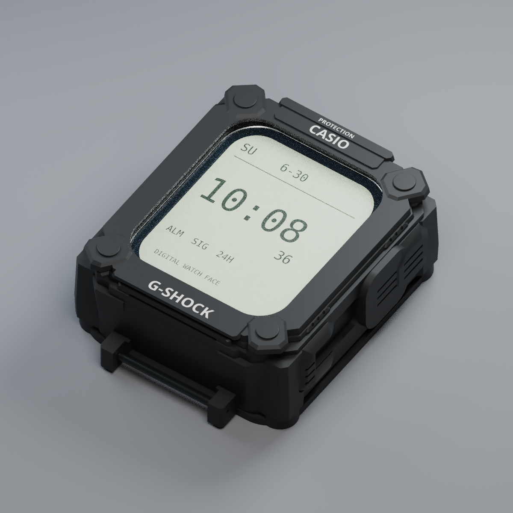

Deux pièces · modèles STL
حمّل ملفات طباعة
الـBody Kit
Téléchargez les deux modèles, puis envoyez-les à votre service d’impression3D.
تحميل الملفين — ZIP6.3Mo · contient les deux STL
Téléchargez les deux modèles, puis envoyez-les à votre service d’impression3D.
تحميل الملفين — ZIP6.3Mo · contient les deux STLLa fenêtre transparente en polycarbonate1.5mm est une pièce distincte. Elle n’est pas l’une des deux pièces imprimées.
هادو ملفات للطباعة، ما كيحتاجوش installation. حمّلهم وصيفطهم للمطبعة. القياسات الحقيقية والـfit خاصهم تجربة أولاً.